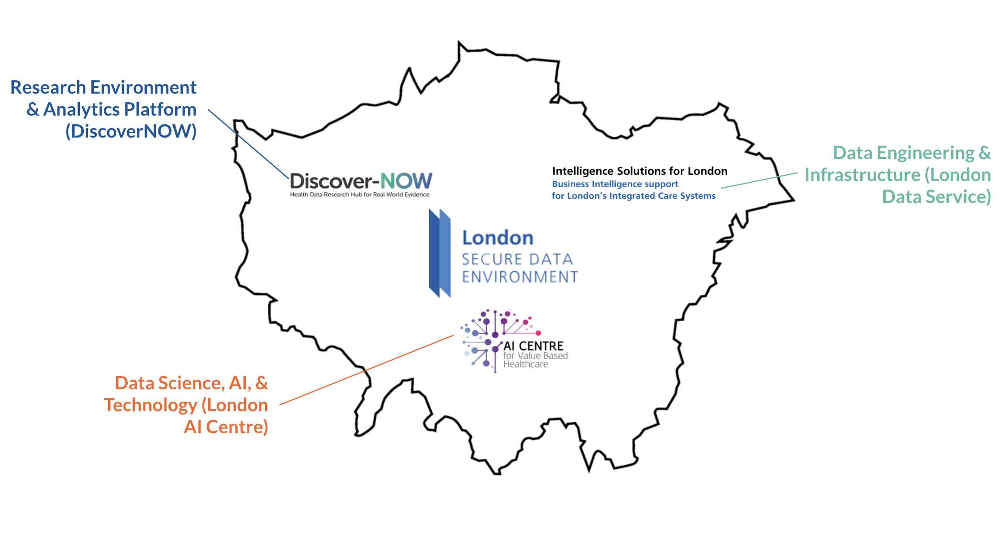

flowchart TD
d1[GP Surgeries] ==>|Primary care data| LDS1[(London Data Service)]
d2[NHS England] ==>|Commissioning datasets| LDS1
d3[Local data sources] ==>|ICS data| ICB
LDS1==> AIC1a["CogStack in LDS"]
AIC1a==>|"Unstructured data
(primary care)"| LDS1
LDS1 ==>|"Linked primary and
secondary care data"| NWL1[("DiscoverNOW Research &
Analytics Environment")]
AIC2["CogStack/OMOP CDM/DICOM
data lakes/FLIP in Hospitals"]-.->|"Multi-modal hospital
data via federation"|NWL1
AIC2 -.-> |"Hospital EHR data
via federation"| LDS1
LDS1 ==>|"Linked primary and
secondary care data"| ICB[("Integrated Care Board 'Sandpits'
x5: NEL/SEL/SWL/NWL/NCL")]
ICB <==>|"Analytics and machine
learning collaboration"| AIC3[AIC Roving Teams]
ICB <==>|Output Sharing| LDS2["Terminologies, Code,
Model Registries"]
AIC3 <==>|Output Sharing| LDS2
NWL1 <==>|Output Sharing| LDS2
classDef green fill:#ab9, stroke:#333, stroke-width:1px
classDef blue fill:#89c, stroke:#333, stroke-width:1px
classDef bluegreen fill:#9ca, stroke:#333, stroke-width:1px
classDef lightblue fill:#ace, stroke:#333, stroke-width:1px
classDef red fill:#c89, stroke:#333, stroke-width:1px
classDef lightorange fill:#ca8, stroke:#333, stroke-width:1px
classDef orange fill:#d96, stroke:#333, stroke-width:1px
classDef purple fill:#a9c, stroke:#333, stroke-width:1px
classDef bluegray fill:#9ab, stroke:#333, stroke-width:1px
classDef gray fill:#fff, stroke:#333, stroke-width:1px
class LDS1,LDS2 blue
class ICB lightblue
class AIC1,AIC1a,AIC2,AIC3 orange
class NWL1,NWL2 bluegray
class d1,d2,d3 bluegreen
Overview of the London SDE
The London Secure Data Environment (SDE) is part of a national research network that will enable secure and more powerful analytics for NHS, academic, and commercial users. Uniquely amongst regional peers, the London SDE does not only focus on a single research platform. Rather, it emphasises the development of data infrastructure and capabilities across the entire region that can support population health and patient care pathways, as well as data environments to enable research and development partnerships.
The SDE is led by OneLondon, as part of the London Health Data Strategy, coalescing around three components (Figure 1):
London Data Service (LDS): hosted in North-East London, the LDS serves as a data engineering and service layer for pan-London primary care and secondary care data. It handles data extraction and linkage, and provisions data within secure analytics environments for both research and NHS users.
DiscoverNOW Research/Analytics Environment: run by Imperial College Healthcare Partners in North-West London, DiscoverNOW supports governance and operation of secure research environments for academic, commercial, and a unified pan-London analytics platform.
London AI Centre (AIC): a national centre of excellence for applied data science and AI, the AIC provides frontier technology and expert teams that enable multi-modal real-world data, federated analytics and model training, and deployment and validation of machine learning tools.

A network of data flows
With the NHS under increasing strain, it has never been more important to use patient data effectively - as a resource for improving clinical and operational decision-making, but also as a valuable asset for research and therapeutics development. To achieve this, data must be extracted, curated, joined together, and made available for secure access. This has always been difficult due to the silo-ed nature of NHS electronic systems. Our objective is to break down these barriers to allow entire pathway data to be securely surfaced and flowed to trusted users (Figure 2). The infrastructure that enable these data flows, will also enable deployment of clinical analytics and machine learning tools to inform pathway and operational decisions.
Patient and Public Engagement
To support the SDE programme, OneLondon has engaged in a wide range of deliberative public engagement, including hosting the first ever Citizen’s Summit to deliberate expectations and complex issues around the use of health and care data. In addition, patient and public outreach for uses of data are conducted through Integrated Care Boards, by patient committees in the AI Centre NHS Trusts, and by Discover-NOW.